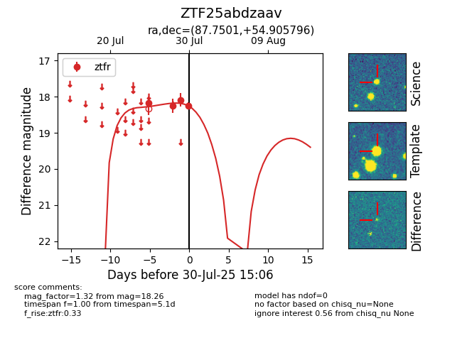

Target ZTF25abdzaav at 2025-07-30 15:06, see:
FINK: fink-portal.org/ZTF25abdzaav
Lasair: lasair-ztf.lsst.ac.uk/objects/ZTF25abdzaav
ALeRCE: alerce.online/object/ZTF25abdzaav
alt names
ZTF25abdzaav (ztf,fink)
coordinates:
equatorial (ra, dec) = (87.7501,+54.90580)
galactic (l, b) = (157.8020,+13.86972)
photometry
last ztfr=18.26
4 ztfr detections
